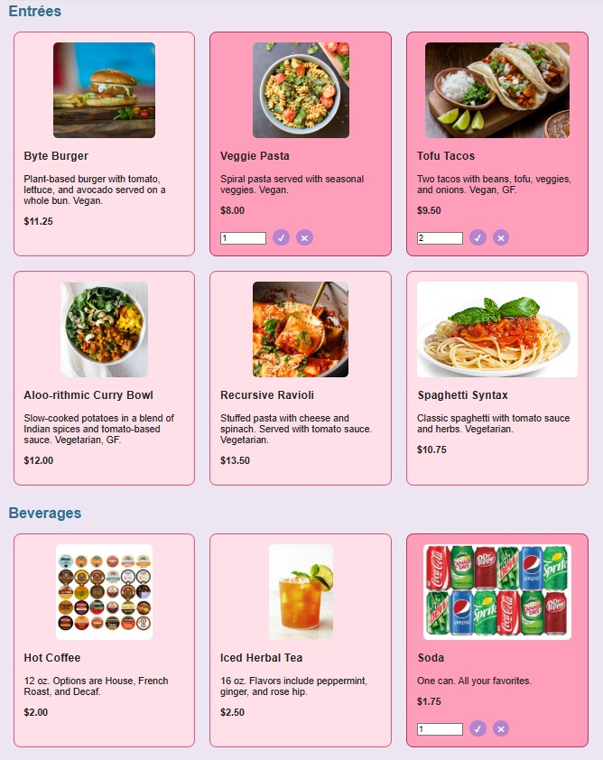

Activity 9 – Clickable Menu Items
In this activity, you will build a new interactive menu page for Byte Bistro. Customers will be able to click on menu items, enter a quantity, and confirm or remove their selection. In this activity, you will log actions to the console. The Live Order sidebar will be added in Activity 10.
This activity sets up the first part of Homework 4.
What You Will Build
- Clickable menu items for entrées, beverages, and desserts
- A quantity input that appears when an item is selected
- Confirm and remove controls for each selected item
- Data attributes for item name, price, and category
- Console output showing selected item information and quantity changes
Important: In this activity, you will log actions to the console. Storing selections in arrays and displaying them in the Live Order sidebar will happen in Activity 10.
Files You Will Use
- menu-order.html – new interactive menu page
- style-menu-onid.css – new CSS file for this page
- menu-interact.js – new JavaScript file for click and quantity behavior
- process-orders.js – renamed from your Activity 8 JavaScript file and used later in HW4
- orders.js – sample data from the previous JavaScript activity
Step 1: Setup Your Folder
Copy all files from your HW2 folder into your HW4 folder before starting. You are building on your existing Byte Bistro site.
Your structure should look similar to this:
hw4/ ├── index.html ├── menu.html ├── order.html ├── menu-order.html ← new interactive menu page ├── reviews.html ├── style/ │ ├── style.css │ ├── style-custom-onid.css │ └── style-menu-onid.css ← new style page ├── js/ │ ├── menu-interact.js ← new JavaScript page │ ├── process-orders.js │ └── orders.js ├── images/
Step 2: Create menu-order.html
Create a new page named menu-order.html.
- Reuse the same header, navigation, and footer as your existing Byte Bistro pages.
- Link your existing stylesheets.
- Link your new menu stylesheet.
- Add your new JavaScript file using defer.
Add this script link before the closing body tag:
<script src="js/menu-interact.js" defer></script>
Group items into categories using a responsive layout with the menu-grid class.
<h2>Entrées</h2> <section class="menu-grid entree-grid"> <!-- 4 entrée items here --> </section> <h2>Beverages</h2> <section class="menu-grid beverage-grid"> <!-- 3 beverage items here --> </section> <h2>Desserts</h2> <section class="menu-grid dessert-grid"> <!-- 2 dessert items here --> </section>
The category-specific classes (entree-grid, beverage-grid, dessert-grid) are included for future styling. In this activity, you may use the same layout for all sections. You can adjust sizes and layout later when polishing your HW4 site.
Step 3: Create Menu Items with Data Attributes
Each menu item should be placed inside a div with the class menu-item. Each item should also include data attributes for category, name, and price.
The quantity input and buttons are grouped together so they can be shown, hidden, and updated as a unit.
<div class="menu-item" data-category="entree" data-name="Byte Burger" data-price="11.25">
<img src="images/byte-burger.jpg" alt="Byte Burger">
<h3>Byte Burger</h3>
<p>Veggie patty on brioche</p>
<p class="price">$11.25</p>
<div class="input-controls">
<input type="number" class="qty-input" min="1" style="display: none;">
<button class="confirm-btn" style="display: none;">✔</button>
<button class="remove-btn" style="display: none;">✖</button>
</div>
</div>
You must include:
- At least 4 entrées
- At least 3 beverages
- At least 2 desserts
Important: Use your own menu items and prices. The names and prices in your HTML must match the names and prices you later use in your JavaScript.
Step 4: Add CSS Styling
Add your styling to style-menu-onid.css. You may use your earlier image styling from the dessert activity, but you should add layout and selection styling for the new interactive menu.
.menu-grid {
display: grid;
grid-template-columns: repeat(auto-fit, minmax(200px, 1fr));
gap: 1rem;
margin-bottom: YYpx;
padding: 1rem;
}
.menu-item {
border: Ypx solid #XXX;
padding: 1rem;
border-radius: YYpx;
text-align: center;
cursor: pointer;
transition: background-color 0.3s;
}
.menu-item.selected {
border: 2px solid #XXX;
background-color: #XXX;
}
.menu-item img {
width: 100%;
height: YYYpx;
object-fit: cover;
}
.qty-input {
margin-top: YYpx;
width: YYpx;
}
.confirm-btn,
.remove-btn {
width: 28px;
height: 28px;
margin-left: 6px;
padding: 0;
border: 1px solid #XXX;
border-radius: 50%;
background-color: white;
font-size: 14px;
cursor: pointer;
}
/* Hover feedback */
.confirm-btn:hover {
background-color: #XXX;
}
.remove-btn:hover {
background-color: #XXX;
}
You may customize colors, borders, spacing, and image styling to match the design of your Byte Bistro site. Replace XXX with colors and YYpx with spacing (like 16px or 24px).
Step 5: Understand dataset
When you write an HTML element like this:
<div class="menu-item" data-name="Byte Burger" data-price="11.25"></div>
JavaScript can access those data-* attributes using the dataset property.
const name = item.dataset.name; // "Byte Burger" const price = item.dataset.price; // "11.25" as a string const category = item.dataset.category;
- data-name becomes dataset.name
- data-price becomes dataset.price
- data-category becomes dataset.category
Use parseFloat() if you need the price as a number.
const price = parseFloat(item.dataset.price);
Step 6: Add JavaScript Click Behavior
In menu-interact.js, attach event listeners to each menu item and to the confirm and remove buttons.
document.querySelectorAll('.menu-item').forEach(function(item) {
item.addEventListener('click', handleItemClick);
item.querySelector('.confirm-btn').addEventListener('click', confirmSelectedItem);
item.querySelector('.remove-btn').addEventListener('click', removeSelectedItem);
});
When a menu item is clicked:
- Show the quantity input
- Show the confirm and remove buttons
- Add the selected class for visual feedback
- Log the clicked item information to the console
function handleItemClick(event) {
const item = event.currentTarget;
const name = item.dataset.name;
const price = parseFloat(item.dataset.price);
const category = item.dataset.category;
console.log(`Clicked: ${name} | Price: ${price} | Category: ${category}`);
const qtyInput = item.querySelector('.qty-input');
const confirmBtn = item.querySelector('.confirm-btn');
const removeBtn = item.querySelector('.remove-btn');
qtyInput.style.display = 'inline-block';
confirmBtn.style.display = 'inline-block';
removeBtn.style.display = 'inline-block';
item.classList.add('selected');
qtyInput.focus();
}
Step 7: Confirm a Selection
When the confirm button is clicked, read the quantity and log the selected item information.
Because the button is inside the menu item, use event.stopPropagation() so the menu item click handler does not run again.
function confirmSelectedItem(event) {
event.stopPropagation();
const item = event.target.closest('.menu-item');
const name = item.dataset.name;
const qtyInput = item.querySelector('.qty-input');
const qty = qtyInput.value;
console.log(`Updated quantity: ${name} x ${qty}`);
}
Step 8: Remove a Selection
When the remove button is clicked, reset the item display and log that the item was removed.
function removeSelectedItem(event) {
event.stopPropagation();
const item = event.target.closest('.menu-item');
const name = item.dataset.name;
const qtyInput = item.querySelector('.qty-input');
const confirmBtn = item.querySelector('.confirm-btn');
const removeBtn = item.querySelector('.remove-btn');
qtyInput.value = '';
qtyInput.style.display = 'none';
confirmBtn.style.display = 'none';
removeBtn.style.display = 'none';
item.classList.remove('selected');
console.log(`Removed item: ${name}`);
}
If clicking the ✔ or ✖ button causes the item to open or close again, your click event is also triggering the menu item. Add event.stopPropagation() inside your button event handler.
Sample Site Images
The sample images below show the general idea. Your page should use your own menu items, prices, images, and styling.

Before You Finish
- [ ] You created menu-order.html with your header, navigation, and footer
- [ ] You created and linked style-menu-onid.css
- [ ] You created and linked menu-interact.js using defer
- [ ] You grouped menu items using the menu-grid layout
- [ ] You included at least 4 entrées, 3 beverages, and 2 desserts
- [ ] Each item has data-name, data-price, and data-category
- [ ] Clicking an item shows the quantity input and controls
- [ ] Confirming an item logs the selected item and quantity
- [ ] Removing an item hides the input and controls
- [ ] Your console output is clear enough to help with debugging
Coming Next
In Activity 10, you will store selected items in arrays and display them in the Live Order sidebar.